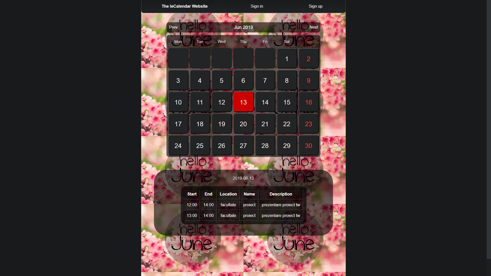
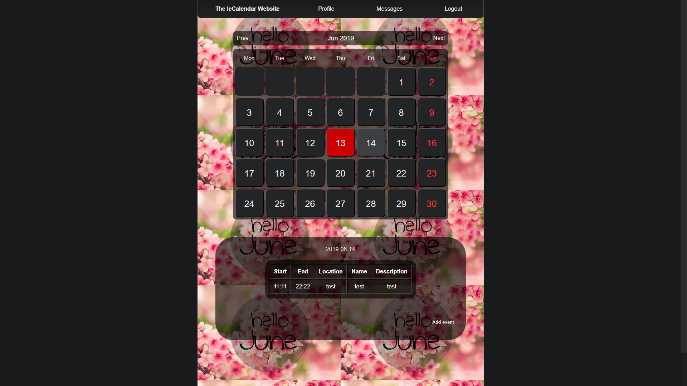
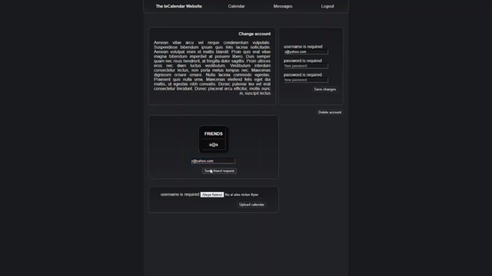
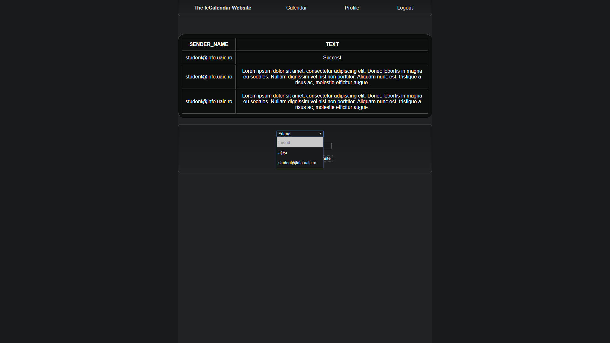
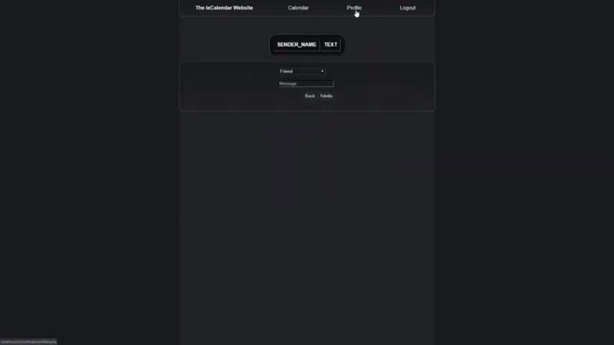
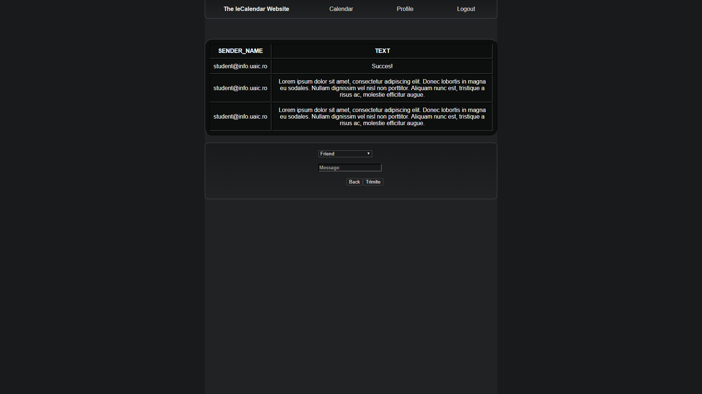

leCalendar is a platform for those who want to be in touch with all the upcoming events, is an autonomous aggregator of events dedicated to a community of practice (for example, conferences on Web development). Specifically, the application administrator will enter a list of people and pages of interest whose activity on social networks will be automatically tracked. When they create or publish data about a new event (e.g., StagiiPeBune Iaşi 2019), the application will automatically process the event information (using the data provided by Facebook, Eventsbrite, Meetup, personal site, etc.) and centralize them on their own page. At least, each event will have associated date and location, a description, ticket price, and descriptive tags (Web Development, Social Skills, Public Speaking, ...) plus other information of interest: invitation only, event category (technical, advertising, recruitment). Users registered on the platform who will be able to "subscribe" to certain tags and receive emails about the events of interest in the next time period / weeks / months). The calendar of events can be exported as an iCalendar document.
In order to have access to our site's functionalities, you need to create an account. Don't worry, your informations are safely stored, as we respect your privacy.
Through leCalendar, we want to provide anyone that enters our website with the essential information regarding events happening around the world.
This is why we provide users with breaking new events. You do not need to log in or have an account in order to access this information.
On our website after you register you may have to add events you're interested in.
To do that, you have to click o a day and press the button Add event
Complete the form with the details and when you are done press the button Add event
In order to socialize and communicate with other people who have an account on this website, we offer you the possibility to select an user who you want to befriend, so you will be able to send messages to him/her.
You can find it in the mid-lower side of the Profile section.
Check your added friends on the lower side of the profile page!
Use the Messages page in order to send a message to your existing friends. Insert the text you want your friend to receive.
Use the Messages page in order to view the messages you got from your friends.
Corban Cristian
Zbant Andrei
Tocu Andrei